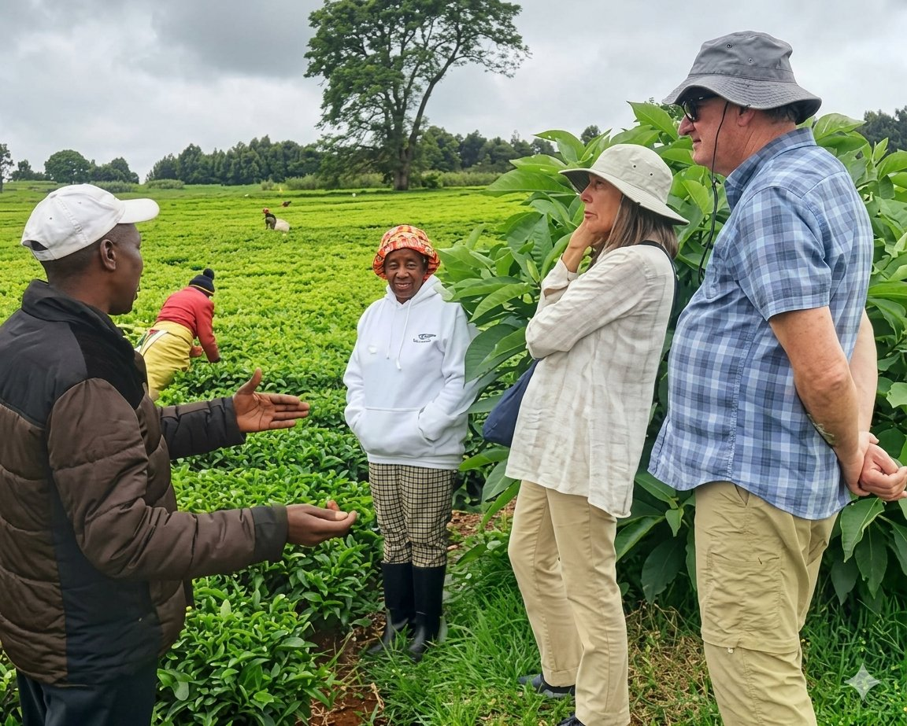
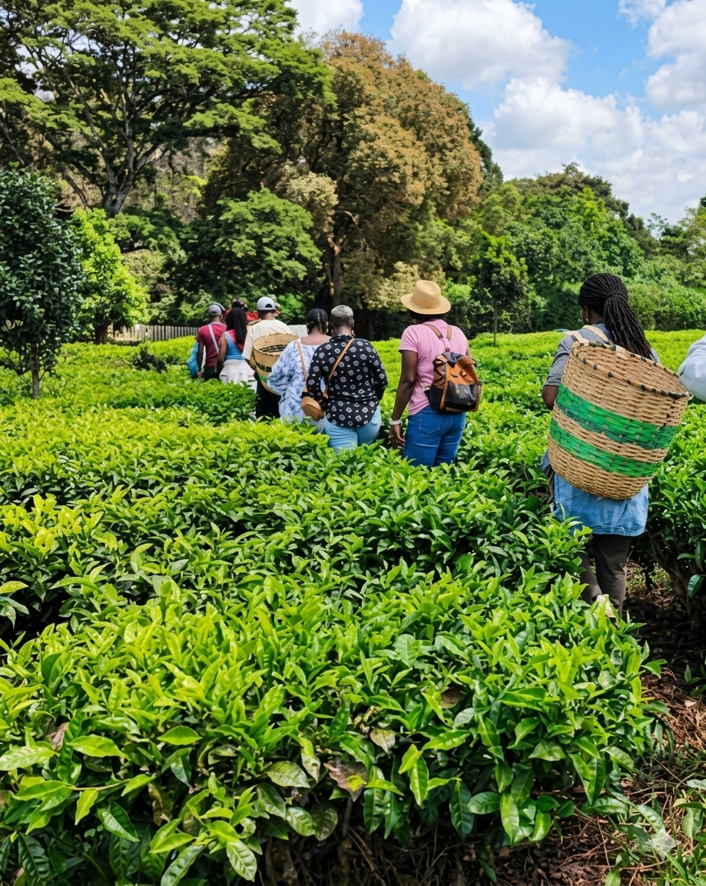

Kericho is more than tea. It is a county of forest paths, cave stories, cool highland air and communities that have welcomed travellers for generations.

Kericho Community Ecotourism is a community-led initiative that opens the doors of our county to visitors in a way that respects the land and benefits the people who live on it.
Every route you take is designed with local communities — from tea estate workers and cultural custodians to self-help groups and small businesses. When you visit, your journey supports families, preserves heritage and keeps our landscapes cared for.
This is not mass tourism. This is a county sharing itself, one trail at a time.
Four kinds of experience, all rooted in Kericho's land and people.
Walk through working tea estates, watch leaves being plucked, tour a factory and taste freshly processed Kericho tea.
Visit the Kipsigis Museum, hear stories behind sacred sites, and learn about communities who have called these highlands home for centuries.
Discover caves, waterfalls and forest trails in Ainamoi, Kipkelion, Bureti and beyond — many known only to locals.
Meet self-help groups and community organisations, see their work first-hand, and understand how tourism can change lives.
We've grouped our sites into geographic routes so you can travel in one direction, spend less time on the road, and see more of what makes Kericho special.

| Route | Highlights |
|---|---|
| Ainamoi Route | Tea estates, Reresik Cave, viewpoints and cultural sites near town |
| Kipsitet Route | Cultural heritage, local markets and community projects |
| Bureti Route | Waterfalls, southern landscapes and quiet village paths |
| Kipkelion Route | Historic sites, coffee farms and highland scenery |
| Southern Route | Natural sites and community-run experiences in the south of the county |
Every shilling you spend stays close to the sites you visit.
Our routes are led by people who grew up here.
We work only with sites that are safe, respectful and well cared for.
No staged experiences — just the county as it is.

13 September 2026
After a county-wide design competition with 28 entrants, we proudly unveiled the new Kericho Community Ecotourism logo at our award ceremony in Kipchimchim.
Read More